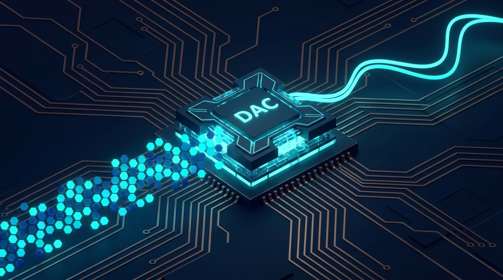
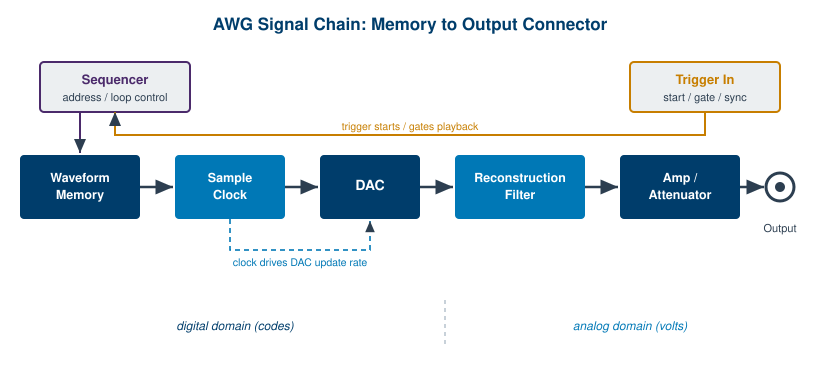
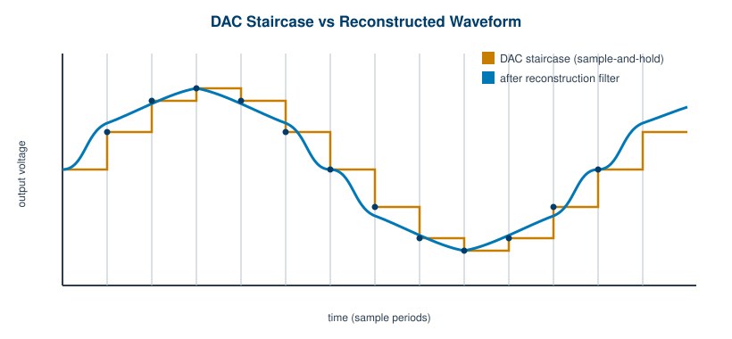

Chapter 2: How an Arbitrary Waveform Generator Works

An arbitrary waveform generator is, at heart, a very fast and very disciplined way of reading a list of numbers out loud. You hand it a sequence of amplitude values, it pushes them through a converter at a precise rate, and a real analog voltage appears at the front panel. That is the whole trick. Everything interesting about an AWG, and everything you will eventually pay for, comes down to how cleanly and how quickly it performs that one operation.
This chapter walks the signal from memory to connector. We will look at where the samples live, how the clock marches them out, what the converter does with them, why the raw output looks like a staircase, and how a filter turns that staircase back into the smooth waveform you asked for. Along the way we will sort out the family names that get thrown around loosely: function generator, arbitrary function generator, and true arbitrary waveform generator are not the same instrument, even though salespeople sometimes use the words as if they were.
2.1 The Signal Chain at a Glance
Before we dwell on any single block, it helps to see the whole chain at once. Every AWG, from a bench unit to a 20 GS/s instrument, follows the same basic topology. The differences are in clock rate, converter resolution, and memory depth, not in the order of operations.

Waveform memory holds the samples as integer codes. The sample clock sets the cadence, advancing the memory address and updating the converter once per tick. The DAC (digital-to-analog converter) turns each code into a voltage. The reconstruction filter removes the high-frequency images left over from sampling, smoothing the staircase into a continuous waveform. The output amplifier and attenuator scale that waveform to the requested amplitude and offset, and present a defined source impedance, usually 50 ohms. The output connector delivers it to your load. Two control paths sit above the main chain: a sequencer that decides which addresses get read and in what order, and a trigger input that decides when playback starts, stops, or repeats.
Notice the dashed line in the figure. To its left, everything is numbers, perfectly repeatable and noise-free. To its right, everything is volts, subject to the analog realities of bandwidth, distortion, and impedance. The DAC is the border crossing, and most of an instrument's character is decided right there.
2.2 Waveform Memory and Playback
The waveform lives in memory as a list of integers, not as voltages. A 14-bit instrument stores each sample as a number from 0 to 16,383; a 16-bit instrument uses 0 to 65,535. These codes map linearly onto the converter's output range, so code zero might correspond to the most negative voltage and the top code to the most positive. The instrument does not store "1.2 volts." It stores the code that, after scaling, the DAC will turn into 1.2 volts.
Clocking the samples out. Playback is a metronome. On each tick of the sample clock, the instrument reads the code at the current memory address, hands it to the DAC, and advances the address by one. When the address reaches the end of the defined waveform, it wraps back to the start and the pattern repeats. That wrap-around is what makes a finite block of memory produce a continuous, periodic signal. Run a 1,000-sample sine at 100 MSa/s and the loop completes 100,000 times per second, giving you a 100 kHz tone.
Memory depth versus playback time. Two numbers get confused constantly, so it is worth nailing down. Memory depth is how many samples the instrument can store. Playback time is how long those samples last when clocked out, and it follows a simple relation:
playback time = memory depth / sample rate
The arithmetic is unforgiving. One million samples at 1 GS/s buys exactly one millisecond of unique signal before the waveform must repeat. Want a longer non-repeating record? You need either deeper memory or a lower sample rate, and lowering the sample rate costs you bandwidth. This tension between depth, rate, and record length is one of the central trade-offs in AWG design, and it is why high-end instruments advertise gigasample memories.
Engineer's corner. When an AWG cannot fit your whole signal in memory, you have three honest options: increase the memory, decrease the sample rate, or break the waveform into segments and stitch them with a sequencer (Chapter 5). What you cannot do is wish the relation away. Time equals depth over rate, every time.
2.3 Direct Digital Synthesis vs True Arb
There are two different ways to get a periodic signal out of digital memory, and most modern instruments offer both. The distinction matters because it determines your frequency resolution and what kinds of signals you can produce.
Direct digital synthesis (DDS) is the clever method used for repetitive tones. Instead of stepping through memory one address at a time, a DDS engine keeps a phase accumulator, a large register that adds a fixed increment on every clock tick. The top bits of that accumulator index into a lookup table holding one period of the waveform, typically a sine. Change the increment, and you change how fast the accumulator rolls over, which changes the output frequency. Because the accumulator is often 32 or 48 bits wide, the frequency resolution is extraordinarily fine, fractions of a millihertz, even though the clock and the table are fixed. DDS also tunes frequency instantly and with continuous phase, which is exactly what you want for sweeps and modulation.
True arbitrary playback is the other method, and it is what gives the AWG its name. Here the instrument reads sequential memory addresses, one sample per clock, and plays back whatever you stored, point by point. There is no lookup table and no assumption that the signal is a simple tone. You can play a captured radar return, a distorted power-line transient, a custom pulse train, anything you can express as samples. The cost is that your frequency and timing resolution are set by the sample clock and the memory length, not by a deep phase accumulator.
When each is used. Reach for DDS when you need a clean, agile, single-frequency signal with fine tuning: a precise sine for a reference, an FSK carrier, a swept tone. Reach for true arb when the signal is not a standard shape, or when you need to reproduce a specific recorded or synthesized waveform faithfully. Many bench instruments, including the BNC Model 645, provide standard DDS shapes (sine, square, ramp, triangle, pulse, noise) alongside arbitrary memory, so you can pick the right engine for each job from one box.
2.4 The Digital-to-Analog Converter
The DAC is where numbers become volts, and it is the single component that most determines output quality. Three of its properties deserve attention.
Resolution (bits). The converter's bit count sets how finely it can divide the output range. An N-bit DAC produces 2N distinct levels, so a 14-bit part gives 16,384 steps and a 16-bit part gives 65,536. More bits mean smaller voltage steps, a lower noise floor, and more available dynamic range. This is why a 16-bit instrument can place small signals on top of large ones without the small signal disappearing into quantization noise.
Update rate. This is how many times per second the DAC can accept a new code and settle to the corresponding voltage. It is effectively the maximum sample rate of the instrument, quoted in megasamples or gigasamples per second. A higher update rate pushes the usable bandwidth up and moves the sampling images farther away from your signal, which makes the reconstruction filter's job easier. The flagship BNC Model 686, for context, runs a 14-bit converter at a 20 GS/s update rate.
Glitch energy. Real DACs do not switch cleanly between codes. During a code transition, internal switches turn on and off with slightly different timing, and the output briefly darts to a wrong value before settling. The area of that excursion is the glitch energy or glitch impulse, and it tends to be worst at major-carry transitions, such as the midscale crossing where many bits flip at once. Glitch energy shows up as spurious tones in the spectrum and limits spurious-free dynamic range. Converter designers spend real effort taming it, which is a large part of why a good DAC costs what it does.
Pro tip. If you are chasing spectral purity and seeing spurs you cannot explain, suspect the DAC before you blame the cables. Glitch energy, DAC nonlinearity, and clock jitter usually dominate an AWG's spurious-free dynamic range long before the analog output path becomes the limiting factor.
2.5 Reconstruction Filtering and the Output Path
Look at the raw output of a DAC and you will not see a smooth curve. You will see a staircase. The converter holds each code's voltage constant for one full sample period, then jumps to the next, so the output is a series of flat steps. This is sample-and-hold behavior, and while the steps trace out your intended waveform, they are not yet the waveform itself.

The reconstruction filter. Those sharp steps contain energy at high frequencies, specifically copies of your signal's spectrum repeated around every multiple of the sample rate. These copies are called images, and they are an unavoidable byproduct of sampling. A low-pass reconstruction filter, sometimes called an anti-imaging filter, sits right after the DAC and removes the images while passing the signal you want. What survives is the smooth, continuous waveform of Figure 2.3. The filter's cutoff sets the practical upper edge of the instrument's usable bandwidth, which is why you will see the reconstruction filter and the rated bandwidth quoted together.
The output path. After filtering, the signal still has to be shaped to your requested amplitude, offset, and impedance. An output amplifier provides gain and adds the DC offset you dialed in. A programmable attenuator scales the level down cleanly for small-signal work, preserving resolution that a software-only volume control would throw away. The output stage presents a defined source impedance, almost always 50 ohms, so that the instrument matches standard coaxial systems and delivers a predictable level into a matched load. Get the impedance match wrong, terminate a 50-ohm source into a high-impedance scope input without accounting for it, and your amplitudes will read double. That is not a fault, it is physics, and Chapter 3 returns to it.
Single-ended versus differential. Most outputs are single-ended: one signal conductor referenced to ground, on a standard coaxial connector. Some instruments also offer differential outputs, a matched pair carrying equal and opposite signals. Differential outputs drive balanced loads directly, reject common-mode noise, and often deliver more voltage swing than a single-ended output of the same instrument, since the two phases add. High-speed instruments such as the BNC Model 685 provide differential outputs for exactly these reasons.
2.6 AWG, Function Generator, and AWFG
The words get used loosely, so let us be precise. Three overlapping instrument classes share the same basic architecture but target different jobs.
A function generator is the simplest member. It produces standard shapes, sine, square, triangle, ramp, pulse, almost always with a DDS engine, plus basic modulation and sweep. It is the workhorse of the bench for routine stimulus, and it is inexpensive because it does not need deep memory or a blistering DAC.
An arbitrary function generator, sometimes written AWFG (arbitrary waveform function generator), adds modest arbitrary memory on top of the standard shapes. You get the convenience of DDS for everyday signals and the flexibility to load a custom waveform when you need one, within a limited memory budget and at a sample rate suited to bench work. The BNC Model 645 fits here: 50 MHz sine output, 10 MHz arbitrary waveforms, 14-bit resolution, 125 MSa/s, and 256K points of arbitrary memory.
A true arbitrary waveform generator is built around deep memory and a fast DAC, with the standard shapes treated as a convenience rather than the point. This is the instrument you buy when you must reproduce complex, high-bandwidth, possibly non-repeating signals: wideband radar, multi-symbol communications, fast pulse sequences. The BNC Model 685 and Model 686 live here, with gigasample memories and multi-gigasample-per-second update rates.
The table below sketches the three classes. Treat the figures as typical ranges for the category, not as guarantees for any specific model, and always confirm current numbers against the datasheet at berkeleynucleonics.com.
| Trait | Function Generator | Arbitrary Function Generator (AWFG) | True High-Speed AWG |
|---|---|---|---|
| Primary engine | DDS (standard shapes) | DDS plus modest arb memory | Deep sequential memory plus fast DAC |
| Typical sample rate | Tens to hundreds of MSa/s | ~100 to several hundred MSa/s | Multiple GSa/s, up to tens of GSa/s |
| Arbitrary memory depth | Little or none | Thousands to a few hundred thousand points | Megasamples to gigasamples per channel |
| Vertical resolution | Typically 12 to 14 bits | Typically 14 bits | 14 to 16 bits |
| Best for | Routine bench stimulus, standard shapes | Bench work needing occasional custom waveforms | Wideband, complex, or recorded signals |
| Representative BNC model | Function-generator modes on bench units | Model 645 | Model 685, Model 686 |
The practical lesson is to match the instrument class to the signal, not to the brochure. If your work is routine sines and squares, a function generator is the right tool and a high-speed AWG is wasted money. If you must replay a captured transient at full fidelity, no amount of DDS will substitute for deep memory and a fast converter. Most engineers end up owning both ends of this range, and reaching for whichever one the task in front of them actually needs.
Check Your Understanding
Five quick questions on this chapter. Your answers save on this device.